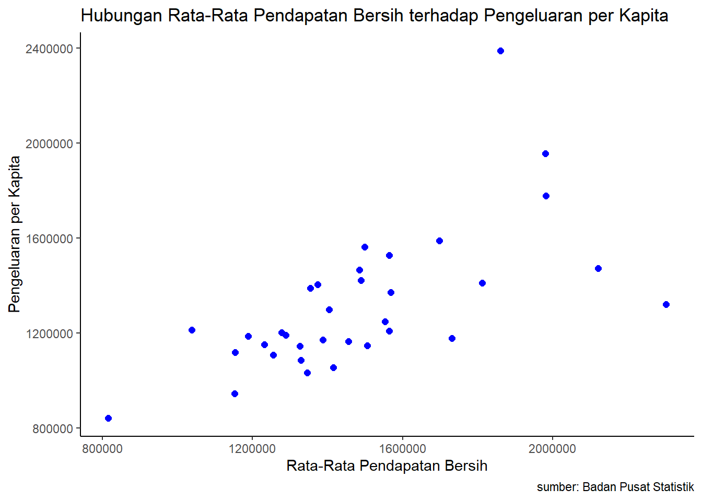
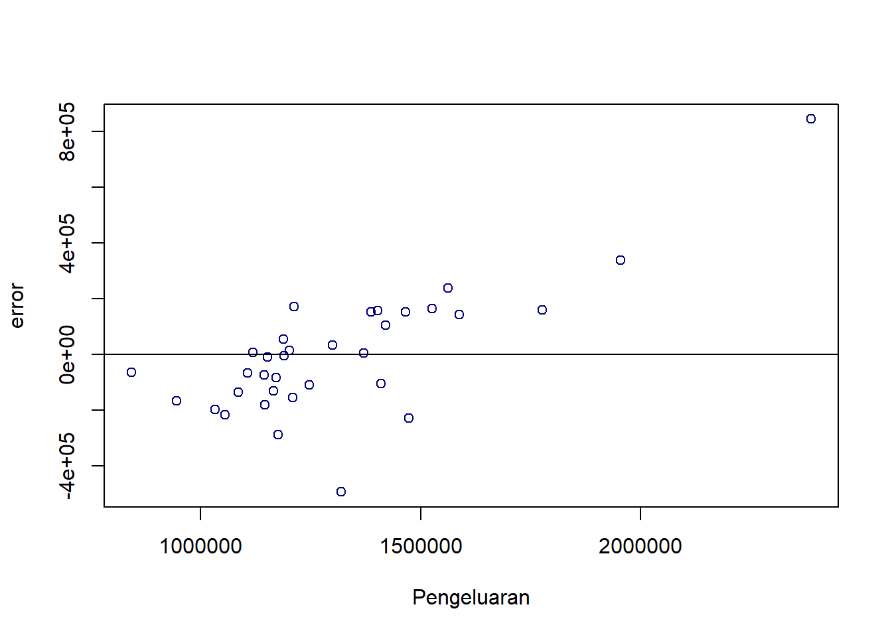
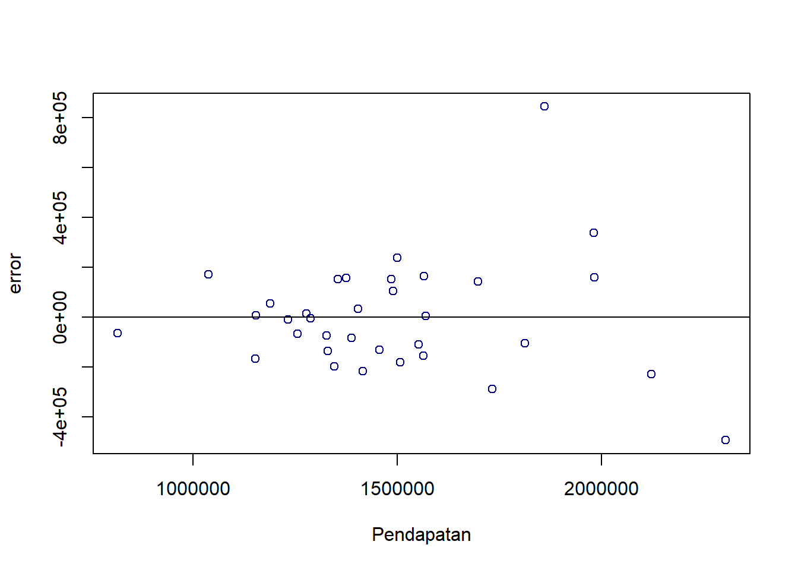

library(tidyverse)
library(readxl)
library(writexl)
library(dplyr)
library(kableExtra)
library(ggplot2)Pengaruh Rata-Rata Pendapatan Bersih terhadap Pengeluaran per Kapita di Indonesia pada Tahun 2021
Metode Penelitian Politeknik APP Jakarta

1 Pendahuluan
1.1 Latar belakang
Indonesia sebagai negara dengan keanekaragaman sosial dan ekonomi yang signifikan, menyajikan tantangan dan peluang unik dalam mengkaji hubungan antara pendapatan dan pengeluaran. Pemahaman mendalam terhadap faktor-faktor yang mempengaruhi pengeluaran per kapita sangat penting untuk merinci pola konsumsi masyarakat.
Dengan meneliti hubungan ini, kita dapat mengidentifikasi sejauh mana pendapatan bersih memengaruhi keputusan pengeluaran atau konsumsi tiap individu. Penelitian ini memungkinkan kita untuk menggali apakah peningkatan pendapatan masyarakat secara umum menghasilkan peningkatan dalam belanja per kapita, atau apakah ada faktor-faktor lain yang memoderasi hubungan ini.
1.2 Ruang lingkup
Ruang lingkup pembahasan ini mencakup pengaruh rata-rata pendapatan bersih yang didapatkan perseorangan terhadap pengeluaran per kapita bulanan di Indonesia berdasarkan provinsi pada tahun 2021. Data-data yang digunakan pada penelitian ini didapatkan dari Badan Pusat Statistik (BPS) Indonesia.
1.3 Rumusan masalah
- Apakah rata-rata pendapatan bersih berpengaruh terhadap pengeluaran per kapita di Indonesia?
- Seberapa besar pengaruh rata-rata pendapatan bersih terhadap pengeluaran per kapita di Indonesia pada tahun 2021?
1.4 Tujuan dan manfaat penelitian
Penelitian ini bertujuan untuk mengetahui tingkat pengaruh rata-rata pendapatan bersih berpengaruh terhadap pengeluaran per kapita di Indonesia pada tahun 2021.
Manfaat dari penelitian ini adalah menambah wawasan baru mengenai pengaruh rata-rata pendapatan bersih berpengaruh terhadap pengeluaran per kapita di Indonesia bagi pembaca. Memberikan pengalaman bagi peneliti, serta sebagai rujukan informasi bagi peneliti lainnya.
1.5 Package
Packages yang digunakan antara lain sebagai berikut:
2 Studi pustaka
Pendapatan merupakan penghargaan dari energi karyawan yang dimanifestasikan sebagai hasil produksi, atau suatu jasa yang dianggap sama dengan itu, yang berwujud uang, tanpa suatu jaminan yang pasti dalam tiap-tiap minggu atau bulan. (As’ad, 2013:89)
Pengeluaran per kapita adalah biaya yang dikeluarkan untuk konsumsi anggota rumah tangga pada periode tententu. (Badan Pusat Statistik Indonesia, 2016)
3 Metode penelitian
3.1 Data
| Provinsi | Pendapatan(X) | Pengeluaran(Y) |
|---|---|---|
| Aceh | 1.326.400 | 1.144.396 |
| Sumatera Utara | 1.455.600 | 1.165.364 |
| Sumatera Barat | 1.404.200 | 1.299.399 |
| Riau | 1.568.900 | 1.370.402 |
| Jambi | 1.563.900 | 1.209.140 |
| Sumatera Selatan | 1.329.200 | 1.085.190 |
| Bengkulu | 1.277.800 | 1.202.285 |
| Lampung | 1.345.500 | 1.033.215 |
| Kepulauan Bangka Belitung | 1.697.900 | 1.588.103 |
| Kepulauan Riau | 1.980.000 | 1.954.610 |
| DKI Jakarta | 1.860.500 | 2.388.129 |
| Jawa Barat | 1.354.400 | 1.387.830 |
| Jawa Tengah | 1.415.600 | 1.055.560 |
| DI Yogyakarta | 1.373.900 | 1.403.151 |
| Jawa Timur | 1.255.300 | 1.107.090 |
| Banten | 1.564.500 | 1.526.545 |
| Bali | 1.485.000 | 1.466.506 |
| Nusa Tenggara Barat | 1.038.000 | 1.212.976 |
| Nusa Tenggara Timur | 815.000 | 842.490 |
| Kalimantan Barat | 1.552.600 | 1.247.266 |
| Kalimantan Tengah | 1.812.700 | 1.409.465 |
| Kalimantan Selatan | 1.489.100 | 1.420.887 |
| Kalimantan Timur | 1.981.600 | 1.777.179 |
| Kalimantan Utara | 1.499.300 | 1.562.306 |
| Sulawesi Utara | 1.731.800 | 1.176.962 |
| Sulawesi Tengah | 1.153.900 | 1.119.343 |
| Sulawesi Selatan | 1.232.100 | 1.151.968 |
| Sulawesi Tenggara | 1.387.500 | 1.171.510 |
| Gorontalo | 1.187.900 | 1.187.600 |
| Sulawesi Barat | 1.152.000 | 945.109 |
| Maluku | 1.287.900 | 1.190.482 |
| Maluku Utara | 1.506.300 | 1.146.769 |
| Papua Barat | 2.121.500 | 1.472.938 |
| Papua | 2.303.000 | 1.319.601 |
Penelitian ini menggunakan data Rata-Rata Pendapatan Bersih Sebulan Pekerja Bebas menurut Provinsi (rupiah) Agustus 2021 sebagai variabel X dan Rata-Rata Pengeluaran per Kapita Sebulan menurut Provinsi dan Daerah Tempat Tinggal (rupiah) September 2021 sebagai variabel Y.
library(readxl)
datareg<-read_excel("datareg.xlsx")New names:
• `` -> `...1`head(datareg)# A tibble: 6 × 3
...1 X Y
<chr> <dbl> <dbl>
1 Aceh 1326400 1144396
2 Sumatera Utara 1455600 1165364
3 Sumatera Barat 1404200 1299399
4 Riau 1568900 1370402
5 Jambi 1563900 1209140
6 Sumatera Selatan 1329200 1085190library(readxl)
datareg<-read_excel("datareg.xlsx")New names:
• `` -> `...1`head(datareg)# A tibble: 6 × 3
...1 X Y
<chr> <dbl> <dbl>
1 Aceh 1326400 1144396
2 Sumatera Utara 1455600 1165364
3 Sumatera Barat 1404200 1299399
4 Riau 1568900 1370402
5 Jambi 1563900 1209140
6 Sumatera Selatan 1329200 1085190library("ggplot2")
library("readxl")
library("dplyr")
ggplot(data=datareg,aes(x=X,y=Y))+
geom_point(color="blue",size=2)+
labs(title="Hubungan Rata-Rata Pendapatan Bersih terhadap Pengeluaran per Kapita",
x="Rata-Rata Pendapatan Bersih",
y="Pengeluaran per Kapita",
caption = "sumber: Badan Pusat Statistik")+
theme_classic()
3.2 Metode analisis
Metode yang dipilih adalah regresi univariat atau Ordinary Least Square (OLS) dengan 1 variabel independen. Penelitian ini bermaksud mencari hubungan antara Rata-Rata Pendapatan Bersih (variabel independen/X) dan Pengeluaran per Kapita (variabel dependen/Y). Spesifikasi yang dilakukan adalah:
\[ y_{t}=\beta_0 + \beta_1 x_t+\mu_t \] di mana \(y_t\) adalah Pengeluaran per Kapita dan \(x_t\) adalah Rata-Rata Pendapatan Bersih
4 Pembahasan
4.1 Pembahasan masalah
| Variable | Coefficient |
|---|---|
| Intercept | 4.108e+05 |
| X | 6.093e-01 |
| Multiple R-squared | 0.4128 |
| Adjusted R-squared | 0.3944 |
| F-statistic | 22.49 |
| p-value | 4.19e-05 |
Hasil regresi yang telah didapatkan dimasukkan ke dalam rumus, sehingga menjadi:
\[ y_{t}=\ 410800 + \ 0.6093 x_t+\mu_t \]
Dari hasil tersebut dapat dilihat bahwa Rata-Rata Pendapatan Bersih berpengaruh positif terhadap Pengeluaran per Kapita di Indonesia pada tahun 2021, yang artinya apabila pendapatan naik satu, maka pengeluaran akan mengalami peningkatan sebesar 0,6093.
4.2 Analisis masalah
Hasil regresinya adalah:
setwd("C:/Metopen UAS")
datayoga <-read_excel("datareg.xlsx")New names:
• `` -> `...1`library(readxl)
reg1<-lm(Y~X,data=datareg)
summary(reg1)
Call:
lm(formula = Y ~ X, data = datareg)
Residuals:
Min 1Q Median 3Q Max
-494356 -134655 -7247 148914 843781
Coefficients:
Estimate Std. Error t value Pr(>|t|)
(Intercept) 4.108e+05 1.949e+05 2.108 0.043 *
X 6.093e-01 1.285e-01 4.743 4.19e-05 ***
---
Signif. codes: 0 '***' 0.001 '**' 0.01 '*' 0.05 '.' 0.1 ' ' 1
Residual standard error: 230600 on 32 degrees of freedom
Multiple R-squared: 0.4128, Adjusted R-squared: 0.3944
F-statistic: 22.49 on 1 and 32 DF, p-value: 4.19e-05Plot error terhadap Pengeluaran
library(readxl)
datareg$m<-resid(reg1)
plot(datareg$Y,datareg$m,xlab="Pengeluaran",ylab="error",col='navy')
abline(h=0)
Plot error terhadap Pendapatan
library(readxl)
datareg$m<-resid(reg1)
plot(datareg$X,datareg$m,xlab="Pendapatan",ylab="error",col='navy')
abline(h=0)
P value yang ditunjukkan sebesar 4.19e-05(alpha 0,05), hal ini menunjukkan signifikansi yang tinggi antara variabel independen dan variabel dependen. Akan tetapi, regresi ini menghasilkan plot error yang bersifat heteroskedastis. Sehingga membentuk pola dan mengurangi karakteristik “best” dari estimator. Dan juga berpotensi mengalami omitted variabel bias.
5 Kesimpulan
Secara umum, dapat disimpulkan bahwa kenaikan rata-rata pendapatan bersih dalam suatu populasi cenderung meningkatkan pengeluaran per kapita. Individu dengan pendapatan yang lebih tinggi memiliki potensi lebih besar untuk menghabiskan lebih banyak uang dan mendukung pertumbuhan ekonomi. Namun, hal ini diiringi dengan faktor lain seperti tingkat konsumsi dan harga barang disetiap tempatnya.
6 Referensi
Badan Pusat Statistik Provinsi Banten, Pengeluaran dan Konsumsi Rumah Tangga Provinsi Banten 2016, (Banten: Badan Pusat Statistik Provinsi Banten, 2016), h. 9.
Hanum, N., & Sarlia, S. (2019). Pengaruh Pendapatan Perkapita TerhadapKonsumsi Di Provinsi Aceh. Jurnal Samudra Ekonomika, 3(1), 65-73.
Devita, A., Delis, A., & Junaidi, J. (2014). Pengaruh pendapatan asli daerah, dana alokasi umum dan jumlah penduduk terhadap belanja daerah Kabupaten/Kota di Provinsi Jambi. Jurnal Perspektif Pembiayaan dan Pembangunan Daerah, 2(2), 63-70.
Iskandar, I. (2017). Pengaruh Pendapatan Terhadap Pola Pengeluaran Rumah Tangga Miskin Di Kota Langsa. Jurnal Samudra Ekonomika, 1(2), 127-134.